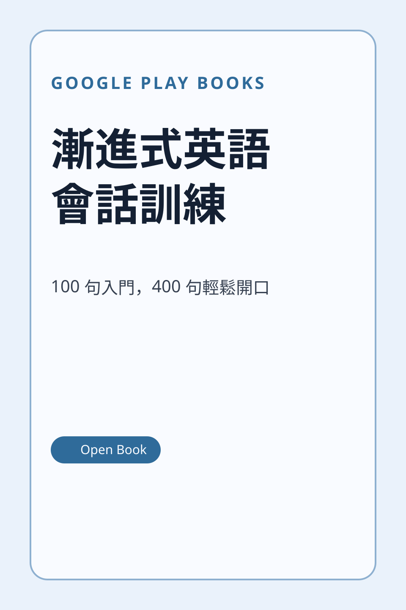
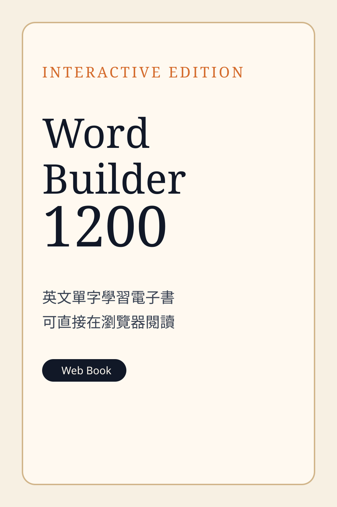
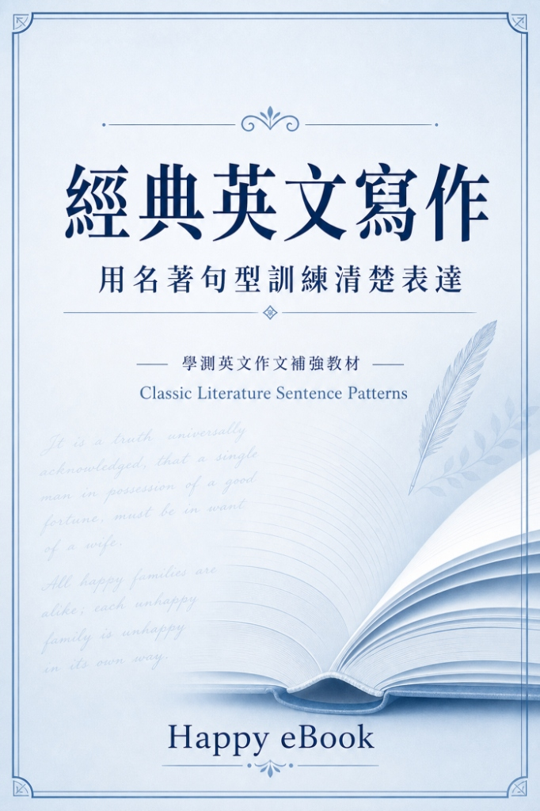
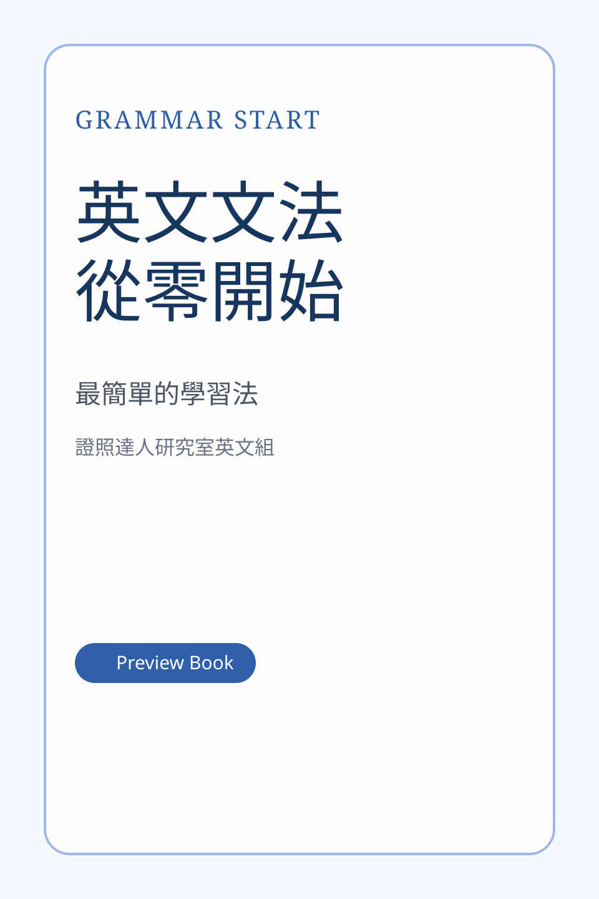

把英文拆成每天可完成的小任務：一句話、一個文法、一組單字、一段朗讀與一個寫作句型。適合學生、教師與想重新打底的自學者。
英文不需要一次讀很久，重點是每天有清楚任務。先建立基本句型與常用字，再用朗讀、對照閱讀與寫作練習把語感累積起來。

每日一句、小學生英語、勵志英語、文法與片語練習。

1200 個核心英文單字的互動式網頁版教材。

用名著句型訓練清楚表達，適合寫作打底。

用最簡單的方法重新建立英文文法基礎。